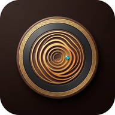

وكلاء ننجاوي
مجلس الذهب
اضغط التشغيل ليبدأ الصوت فورًا. أضف سماعةً فلا يُعاد تشغيل الأخريات.
0:00
0:00

مجلس الصوت ننجاوي · عدة سماعات، مسار واحد لا ينقطعوكلاء ننجاوي
اضغط التشغيل ليبدأ الصوت فورًا. أضف سماعةً فلا يُعاد تشغيل الأخريات.
المقاطع تُفك قبل أن تُعزف، والتسليم يُجدول عند الحد لا بعده.
لا يُرسل صوت ولا اسم جهاز إلى أي خادم. الحساب كله على جهازك.